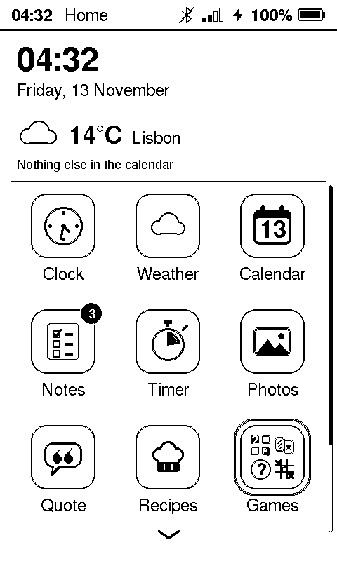

Home: the day at a glance
The board starts on Home. A widget at the top shows the time and date, the weather outside and your next event; tap any part to open its app. Below it is an icon for every app.
- The icons are live. The clock’s hands show the time, the calendar shows today’s date, the weather icon shows the sky now, and Claude’s icon is a gauge of this week’s usage.
- Badges count your open tasks and the minutes left on a timer.
- When there are more apps than fit, swipe up for the next row. UP and DOWN move a ring from icon to icon, and OK opens it.
- Games is a folder: it opens its own grid of seven games.
- Choose which apps appear in Settings.
Screenshot comingHome, held upright

Screenshot comingHome, landscape